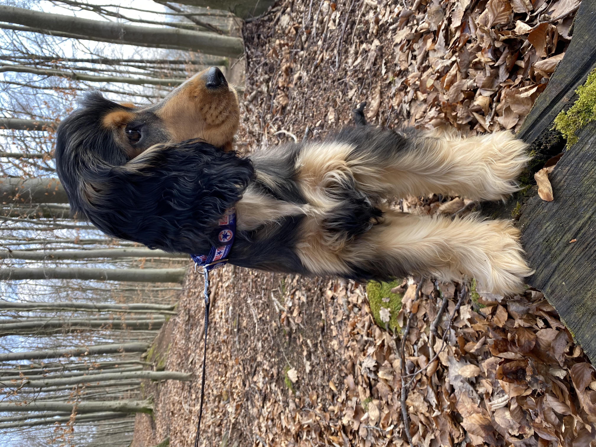
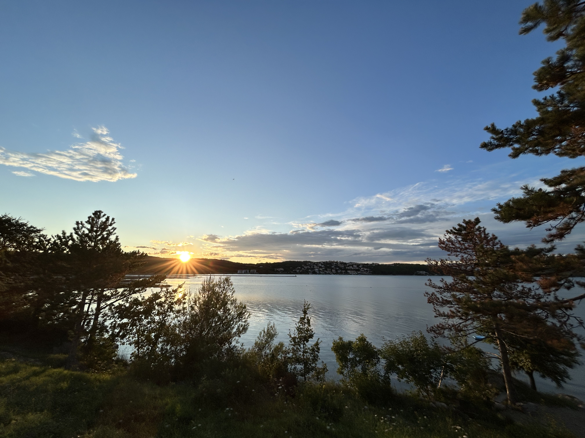
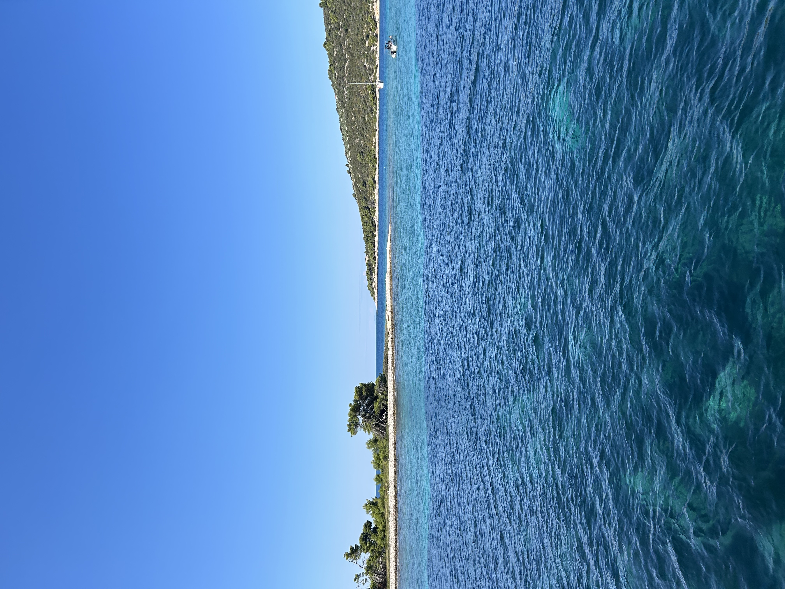
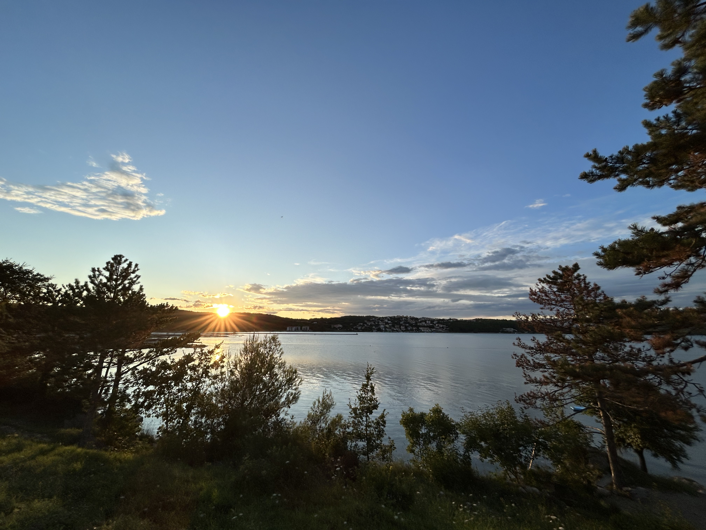
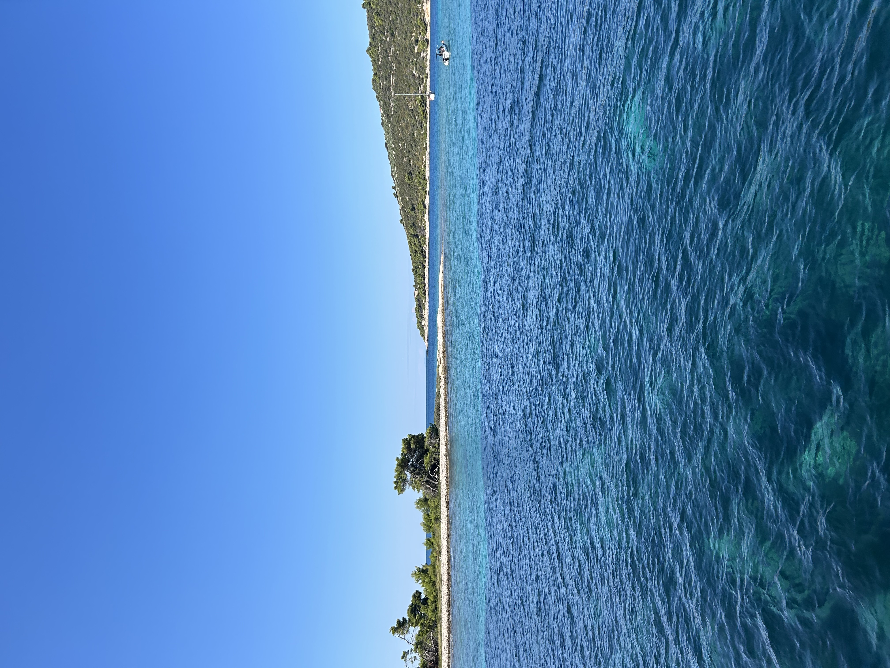

Schola Europa Akadémia: Szoftverfejlesztő- és Tesztelő: Szakképesítés
Forrai Metodista Gimnázium és Művészeti Technikum: Érettségi bizonyítvány
2 éve léptem be az informatika világába, amikor elkezdtem az előző okj-s képzésemet ahol Szoftverfejlesztőnek tanultam és sikeresen megkaptam a szakképesítést, ezért szeretném a saját tudásom fejleszteni.
Kiemelt érdeklődési köreim:
Jelenleg Budapesten élek, van egy spánielem akit Dennis-nek hívnak. Szabadidőmet a barátaimmal töltöm akikkel sokszor kirándulunk a kutyusainkkal. Szeretek autót vezetni, hobbijaim közé is tartozik, valamint a gasztronómia, a fotózás, a videójáték és minden ami kutyákkal kapcsolatos.
Kedvenc játékaim:
Kedvenc ételeim:
Kedvenc kutyafajtáim:
Kedvenc saját fényképeim:
 


